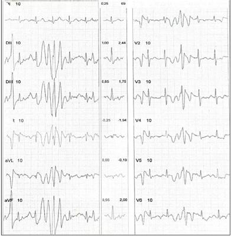
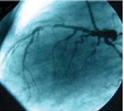
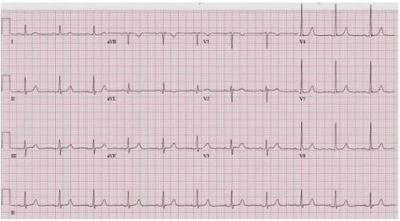
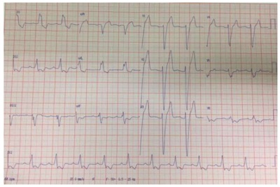

Questão 1 · Cardiologia · Indicações de revascularização · 4000182175Homem de 66 anos, diabético, portador de coronariopatia obstrutiva e doença arterial obstrutiva periférica, ambas ateroscleróticas, creatinina de 1,4 mg/dl, fração de ejeção do ventrículo esquerdo de 30%, com 22% de miocárdio isquêmico pela cintilogra a, com lesão de 55% de tronco de artéria coronária esquerda e obstruções maiores que 70% em ramo marginal da circunflexa, descendente anterior proximal, segundo ramo diagonal e porção distal da coronária direita que é dominante. O Syntax Score I é de 38. Apresenta angina classe III segundo a Sociedade Canadense de Cardiologia. Qual alternativa aponta para a conduta que tem maior probabilidade de oferecer maior sobrevida em 4 anos?
A Cirurgia de revascularização do miocárdio.
B Tratamento paliativo.
C Tratamento medicamentoso otimizado apenas.
D Intervenção Coronária Percutânea.
Questão 2 · Drogas que previnem eventos cardiovasculares · Estatinas · 4000181560Sobre a prevenção cardiovascular na atenção primária a saúde, é correto afirmar que
A a aspirina está indicada para uso contínuo na prevenção secundária de pessoas que sofreram infarto do miocárdio.
B o uso das estatinas deve ser iniciado o mais precoce possível na prevenção primária, tendo em vista a baixa adesão das pessoas a mudanças do estilo de vida.
C é recomendado o uso de bebida alcoólica em doses superiores a 20 gramas ao dia para homens com vistas a reduzir o risco cardiovascular na prevenção primária.
D a realização de provas funcionais como o teste de esforço são úteis no diagnóstico precoce de doença coronariana, devendo ser iniciado a partir dos 20 anos.
E a US Preventive service Task Force e a Sociedade Europeia de Cardiologia recomendam a avaliação sistemática de risco cardiovascular a partir dos 30 anos em pessoas sem fatores de risco.
Questão 3 · Avaliação ambulatorial do paciente com dor torácica · 4000169577Sobre o manejo da angina estável, assinalar a alternativa CORRETA:
A Ácido Acetilsalicilico (AAS), estatinas e hitratos são drogas que, comprovadamente, reduzem mortalidade.
B Angina, na presença de sintomas de insuficiência cardíaca congestiva, é indicação de cineangiocoronariografia.
C A revascularização miocárdica é imprescindível para o aumento de sobrevida no paciente com angina estável.
D No paciente com dislipidemia e diabetes mellitus associados, o alvo é um LDLc < 130mg/dl.
Questão 4 · Cessação do tabagismo · Cessação do tabagismo · Cardiologia · 4000167870Uma paciente de 65 anos de idade compareceu à consulta com queixa de polidipsia, polifagia, poliúria e perda ponderai de 5 kg nos últimos três meses. Queixa-se também de humor deprimido, anedonia e avolia. Tabagista, possui diagnósticos de hipertensão arterial sistêmica (HAS), doença pulmonar obstrutiva crônica (DPOC) e depressão. Faz uso de amitriptilina 25 mg à noite, enalapril 10 mg, 2 vezes ao dia, hidroclorotiazida 25 mg, 1 vez ao dia e salbutamol inalatório sob demanda. Ao exame físico apresenta mancha hiperpigmentada em região de dobra cervical, aveludada à palpação. Observou-se PA =160 mmHg x 110 mmHg em ambos os membros superiores. Foi realizada medida de HGT, com resultado de 320 mg/dL. Com base nesse caso clínico e nos conhecimentos médicos correlatos, julgue o item a seguir. O fumo é um fator de risco totalmente evitável de doença e morte cardiovasculares, e seu enfrentamento precisa ser feito.
A Certo.
B Errado.
Questão 5 · Cardiologia · Indicações de revascularização · 4000166226Mulher, 64 anos de idade, hipertensa e diabética, apresenta angina estável há 3 anos, em tratamento medicamentoso irregular, não otimizado. Ecocardiograma: função biventricular preservada, sem alteração valvar. Coronariogra a: lesão triarterial com 40% de obstrução nas artérias descendente anterior, circun exa e coronária direita distal. Qual é o tratamento mais adequado?
A Intervenção coronária percutânea com
B Tratamento conservador.
C Cirurgia de revascularização miocárdica.
D Intervenção coronária percutânea com stent de primeira geração.
Questão 6 · Drogas que previnem eventos cardiovasculares · Cardiologia · 4000163454Risco residual em doença arterial coronariana refere-se ao risco elevado de recorrência de eventos cardiovasculares, como infarto ou morte cardiovascular, em pacientes com coronariopatia, apesar da utilização de terapia otimizada com estatina de alta potência e antiplaquetários. Por isso, há diversos estudos sendo realizados sobre novas terapias para redução desse risco. A droga que tem se mostrado promissora em ensaios clínicos randomizados na redução do risco residual tanto em paciente com doença arterial coronariana estável quanto em paciente com síndrome coronariana aguda recente é:
A metotrexate.
B colchicina.
C leflunomida.
D infliximabe.
E rituximabe.
Questão 7 · Fisiopatologia · Cardiologia · 4000146637O infarto e a morte cardíaca são as principais causas de morte na cirurgia. Eventos clínicos, como taquicardia, anemia, uso de drogas simpaticomiméticas, dentre outros, podem levar ao desequilíbrio entre a oferta e o consumo de oxigênio miocárdio e, por conseguinte, provocar isquemia perioperatória. Ocorre que há outros mecanismos importantes envolvidos na isquemia perioperatória, sendo que há a sua divisão em duas fases, quais sejam:
A Fenômenos de instabilização e ruptura da placa aterosclerótica e os fenômenos de oclusão vascular.
B Fenômenos do vasoespasmo coronário e os fenômenos de estabilização e ruptura da placa aterosclerótica.
C Fenômenos de estabilização e ruptura da placa aterosclerótica e os fenômenos de oclusão vascular.
D Fenômenos do vasoespasmo coronário e os fenômenos de instabilização e ruptura da placa aterosclerótica.
Questão 8 · Exames complementares · Avaliação ambulatorial do paciente com dor torácica · 4000146622Aterosclerose e Doença Arterial Coronariana Homem, 46 anos, com dor em região torácica (precordial), aperto ou queimação que irradia para ambos os ombros, mandíbula e membro superior esquerdo. Nesse caso haverá indicação do exame complementar de cintilogra a de perfusão miocárdica:
A Para a avaliação das funções sistólica e diastólica, de alterações da motilidade ventricular, das valvas cardíacas e do pericárdio.
B Por haver moderada probabilidade de DAC, no caso de cintilografia inconclusiva, e paciente sintomático, com exames normais.
C Por haver relato de dor torácica ou suspeita de angina.
D Caso tenha havido teste ergométrico inconclusivo por alterações eletrocardiográficas prévias ou incapacidade de realizar exercícios até uma faixa de frequência cardíaca adequada.
Questão 9 · Teste ergométrico · 4000146333Um homem de 59 anos de idade é avaliado por uma história de desconforto torácico intermitente há 3 meses. Ele tem hipertensão em uso de lisinopril e anlodipino. Exame físico: afebril, corado e hidratado; PA: 118 x 74 mmHg, FC: 62 bpm, FR: 14 ipm; cardíaco e pulmonar: normais. Um teste de esforço com eletrocardiograma contínuo mostrou infradesnivelamento de 2,2 mm em DII, DIII e aVF. Além disso, o paciente evoluiu com desconforto torácico durante o teste. A conduta de escolha recomendada nessa circunstância é:
A encaminhar o paciente para o departamento de emergência.
B iniciar aspirina, clopidogrel, atenolol e nitrato.
C solicitar uma cintilografia miocárdica com tálio e dipiridamol.
D solicitar uma angiografia coronariana percutânea.
E solicitar uma angiotomografia multidector de artérias coronárias.
Questão 10 · Avaliação ambulatorial do paciente com dor torácica · 4000146072A dor torácica pode não estar presente durante um episódio de SCA em até cerca de um terço dos casos. Estes pacientes podem apresentar dispneia isoladamente, náuseas, vômitos, palpitações, síncope, ou mesmo parada cardíaca. Podemos indicar como correto que:
A Sintomas denominados equivalentes não isquêmicos normalmente acometem idosos, mulheres e pacientes diabéticos.
B Sintomas denominados equivalentes isquêmicos normalmente acometem idosos, mulheres e pacientes diabéticos.
C Sintomas denominados equivalentes isquêmicos nunca acometem idosos, mulheres e pacientes diabéticos.
D Sintomas denominados equivalentes isquêmicos normalmente acometem somente pacientes diabéticos.
Questão 11 · Avaliação ambulatorial do paciente com dor torácica · 4000143254Homem de 68 anos, hipertenso, diabético e dislipidêmico há 20 anos, tabagista há 40 anos, atualmente em uso de 10 cigarros por dia, comparece à consulta informando dor precordial aos esforços, que melhora em repouso, iniciada há um mês. Procurou médico particular que solicitou teste ergométrico. Considerando as características do paciente, a probabilidade pré-teste de doença cardíaca isquêmica é:
A alta, mas é necessário realizar o teste ergométrico para a confirmação do diagnóstico
B moderada, e a realização do teste ergométrico é dispensável para o diagnóstico
C moderada, e o teste ergométrico positivo confirma a suspeita diagnóstica
D alta, e a confirmação do diagnóstico dispensa o teste ergométrico
Questão 12 · Teste ergométrico · 4000140609Mulher de 61 anos, com histórico de HAS bem controlada, refere ter engordado 5 kg durante a pandemia da COVID 19 e está decidida a retornar os exercícios físicos, de forma regular e mais intensa, na academia. Para retomar a atividade física, a academia exigiu um atestado médico de aptidão física. Em razão disso, foi ao cardiologista e relatou que não tem outras comorbidades, sintomas cardiovasculares atuais ou prévios e já iniciou atividades de ciclismo ao ar livre faz 3 semanas. A rmou ainda que faz uso de Losartana 50 mg 2x ao dia. Ao realizar exame físico, veri cou-se o seguinte: PA 124x82 mmHg FC 72 bpm, restante sem alterações significativas. O médico solicitou eletrocardiograma de repouso, que não apresentou alterações significativas, e um teste ergométrico, que evidenciou comportamento normal da pressão arterial e boa capacidade funcional. Contudo, demonstrou uma alteração que pode ser identi cada em parte do exame reproduzido abaixo. Com base nesse resultado do exame, o médico deve

A encaminhar a paciente para realização de ecocardiograma e estudo eletrofisiológico além de não liberar para atividade nesse momento.
B solicitar ressonância cardíaca para descartar o diagnóstico de cardiopatia estrutural e liberar a paciente apenas para atividades físicas em academia, se o resultado do exame for normal.
C fornecer atestado que libera a paciente somente para atividades físicas, após a realização de Holter 24 horas cujo resultado não apresente alterações significativas.
D fornecer atestado que libera a paciente para atividades físicas em academia, pois a alteração encontrada não tem relevância clínica.
Questão 13 · Avaliação ambulatorial do paciente com dor torácica · 4000133797Mulher de 30 anos e sem fatores de risco para doença cardíaca isquêmica (DCI) busca, muito nervosa, atendimento na Clínica de Família devido à queixa de dor precordial aos esforços que melhora em repouso e com início há um mês. Procurou médico particular que solicitou um teste ergométrico. O pai, de 78 anos de idade, morreu de infarto agudo do miocárdio (IAM) há dois meses. Visto as características clínicas da paciente, a probabilidade pré-teste de que ela tenha DCI é:
A baixa, e se o teste ergométrico for positivo não levará a confirmação de DCI .
B muito baixa, mas se o teste ergométrico for positivo levará ao diagnóstico de DCI .
C moderada, e se o teste ergométrico for negativo terá valor preditivo para afastar a DCI.
D alta, mas se o teste ergométrico for negativo terá pouco valor para o diagnóstico de DCI.
Questão 14 · Mudança de estilo de vida · Tratamento f armacológico · Cardiologia · 4000131210Determinado paciente de 58 anos de idade, tabagista, com histórico de IAM há cinco anos e DM2, em uso de metformina, comparece à consulta com os seguintes exames laboratoriais: glicemia = 136 mg/dL; colesterol HDL = 32 mg/dL; colesterol LDL = 192,3 mg/dL; e creatinina sérica = 1,32 mg/dL. Apresenta medida de PA = 165 mmHg x 102 mmHg, FC = 80 bpm, SatO2 = 92% com níveis tensionais confirmados em duas consultas com mais de quatro semanas entre elas. Considerando esse caso clínico e os conhecimentos médicos correlatos, julgue os itens a seguir. Tendo em vista o histórico de IAM prévio e as demais comorbidades, além do controle pressórico, também é recomendado o controle dos fatores de risco, tais como controle glicêmico, cessar tabagismo, uso de AAS e estatinas.
A Certo.
B Errado.
Questão 15 · Ecocardiograma · Indicações de cateterismo · Eletrocardiograma · 4000131163Um paciente com história de dor torácica aos esforços comparece à consulta por estar mais cansado do que o normal. Refere que vem apresentando ortopneia e dispneia paroxística noturna. Foram realizados investigação laboratorial, Holter, ecocardiograma e cateterismo cardíaco. O ecocardiograma e o cateterismo estão representados a seguir. Tendo em vista esse caso clínico, as imagens apresentadas e os conhecimentos médicos correlatos, julgue o item a seguir. O eletrocardiograma desse paciente pode apresentar alterações isquêmicas, como onda precordiais.


A Certo.
B Errado.
Questão 16 · Ecocardiograma · Indicações de cateterismo · Cardiologia · 4000131160Um paciente com história de dor torácica aos esforços comparece à consulta por estar mais cansado do que o normal. Refere que vem apresentando ortopneia e dispneia paroxística noturna. Foram realizados investigação laboratorial, Holter, ecocardiograma e cateterismo cardíaco. O ecocardiograma e o cateterismo estão representados a seguir. Tendo em vista esse caso clínico, as imagens apresentadas e os conhecimentos médicos correlatos, julgue o item a seguir. Na imagem do cateterismo, observa-se lesão em artéria descendente anterior.


A Certo.
B Errado.
Questão 17 · Doença Arterial Coronariana Estável DAC estável · 4000129908Paciente EM, 58 anos, hipertenso e com história familiar de Doença Arterial Coronariana. Apresentava sintomas de angina aos pequenos esforços. Não chegou a realizar teste de esforço, pela exuberância do quadro clínico. Realizou uma cinecoronariogra a. Neste exame observaram-se as artérias coronárias. Foi possível visualizar todas as artérias epicárdicas do coração. Em relação à anatomia das artérias coronárias, é correto afirmar que
A a artéria circunflexa fornece o ramo agudo marginal.
B a artéria coronária direita origina os ramos diagonais.
C a artéria coronária esquerda dá origem a artéria ventricular posterior.
D a artéria descendente anterior dá origem aos ramos diagonais e septais.
E o tronco da artéria coronária esquerda dá origem a artéria aguda marginal.
Questão 18 · Anamnese e exame f ísico · 4000129884A angina pectoris (do peito) é a manifestação clínica mais comum nos pacientes com isquemia miocárdica. Em relação às características da angina pectoris, avalie as assertivas abaixo: I - A angina tem um padrão crescente-decrescente, dura 20 a 30 minutos e pode irradiar-se para ombros e membros superiores, mais comumente ao lado esquerdo. II - Sinal de Levine é a forma como o paciente descreve a dor anginosa, com a mão sobre o esterno, algumas vezes com o punho cerrado, para indicar a dor central subesternal constritiva. III - A angina pode ser noturna, provocada por bradicardia episódica, maior oxigenação noturna e redução do volume circulante após deitar. IV - Os “equivalentes” anginosos são sintomas de isquemia miocárdica que não sejam angina, como dispnéia, náuseas, fadiga e desmaio. Estão corretas as assertivas:
A I e III apenas
B II e IV apenas
C III e IV apenas
D I, II e III apenas
E Todas estão corretas
Questão 19 · Fisiopatologia · 4000129883A Cardiopatia Isquêmica é um distúrbio no qual existe um suprimento inadequado de sangue e oxigênio para uma região do miocárdio. Em relação à fisiopatologia da isquemia miocárdica analise as assertivas abaixo: I - Os principais determinantes do consumo miocárdico de oxigênio são a freqüência cardíaca, a contratilidade miocárdica e a tensão da parede miocárdica. II - Normalmente os vasos intramiocárdicos de resistência demonstram uma grande capacidade de dilatação como, por exemplo, no exercício. III - A maior resistência ao fluxo coronariano se faz principalmente nos vasos coronarianos epicárdicos. IV - Alterações fisiológicas da pressão arterial não interferem no fluxo coronariano. Estão corretas as assertivas
A I e II apenas.
B I e III apenas.
C II e IV apenas.
D III e IV apenas.
E todas estão corretas.
Questão 20 · Cintilograf ia miocárdica · 4000110421Para a investigação de doença arterial coronariana, a cintilogra a de perfusão miocárdica de repouso e estresse físico está indicada na seguintes situação:
A insuficiência cardíaca descompensada, que não permita a realização do decúbito dorsal horizontal para realização de cateterismo.
B estenose aórtica severa sintomática, visando diferenciar a dor relacionada à coronariopatia da dor da estenose aórtica.
C pacientes com angina instável, com TIMI Risk elevado, 6 (0-7).
D pacientes sintomáticos ou com eletrocardiograma sugestivo de isquemia, e com probabilidade pré-teste intermediária ou alta.
E suspeita de pericardite aguda, com eletrocardiograma com supradesnivelamento de ST, evitando procedimento invasivo.
Questão 21 · Drogas antiisquêmicas · Tratamento f armacológico · 4000107820Homem, 60 anos, com passado de IAM de parede anterior, sob acompanhamento clínico, apresenta dor torácica aos grandes esforços e níveis ambulatoriais médios da PA de 160x100 mmHg. Qual das medicações abaixo NÃO estaria indicada?
A Vasodilatador arterial direto
B Beta-bloqueador
C Inibidor de IECA
D Bloqueador dos canais de cálcio não hidropiridínico
E Espironolactona
Questão 22 · Epidemiologia · Cardiologia · Abordagem das dislipidemias e estratif icação de risco cardiovascular · 4000020343A maior proporção de mulheres entre os idosos significa maior proporção de pessoas com morbidade crônica. Por exemplo, 62,0% dos homens e 67,4% das mulheres declararam ter hipertensão e 23,2% e 36,9% de homens e mulheres, respectivamente, afirmaram ter colesterol alto. NÃO podemos concordar com a alternativa:
A As mulheres apresentam uma proporção mais elevada de contraírem alguma doença do que os homens, 81,2% e 73,1%, respectivamente.
B Dentre as doenças relatadas, não predominaram as Doenças Cardiovasculares (DCV).
C Estas doenças constituem, também, a principal causa de morte da população idosa; 34,2% e 35,2% dos óbitos masculinos e femininos, respectivamente.
D Entre elas, destacam-se o Infarto Agudo do Miocárdio (IAM) e os Acidentes Vasculares Encefálicos (AVE).
Questão 23 · Cirurgia de revascularização miocárdica · Angina Instável AI · 4000011319Mulher, 66 anos de idade, hipertensa e diabética é admitida no pronto socorro por quadro de angina instável há 3 meses. Encontra-se clínica e hemodinamicamente estável. Ecocardiograma com fração de ejeção de ventrículo esquerdo estimada em 40%. Coronariogra a evidenciou lesão proximal focal de 80% em artéria interventricular anterior e lesão focal de 70% em 1/3 médio de artéria circunflexa. Qual é a melhor conduta?
A Angioplastia coronariana com stent farmacológico
B Tratamento clínico para insuficiência coronariana
C Realização de cintilografia miocárdica
D Administração de trombolítico IV
E Cirurgia de revascularização miocárdica
Questão 24 · Doença Arterial Coronariana Estável DAC estável · Cardiologia · 4000130284Homem, 53a, refere episódios de dor precordial relacionados aos esforços há cerca de 1 mês. O último episódio ocorreu há cerca de 2 horas, após subir uma ladeira, e ainda persiste no momento da consulta. Antecedentes pessoais: tabagismo 40 maços/ano. Exame físico: FC= 68bpm, FR= 14irpm, PA= 142X92 mmHg, Eletrocardiograma: A CONDUTA INICIAL NESTE CASO É:

A Inibidor da ciclo-oxigenase-1 e da gliproteína IIb/IIIa.
B Inibidor da ciclo-oxigenase-2 e do receptor do ADP.
C Inibidor da ciclo-oxigenase-1 e do receptor do ADP.
D Inibidor da ciclo-oxigenase-2 e da gliproteína IIb/IIIa.
Questão 25 · Epidemiologia · 4000122791Todos os fármacos abaixo reduzem a mortalidade por doença arterial coronariana, exceto:
A Clopidogrel
B Estatinas
C Ácido acetilsalissílico
D Nitrato de ação prolongada
E Betabloqueadores
Questão 27 · Cateterismo Cardíaco · Teste ergométrico · Cardiologia · 4000067685Paciente portador de angina faz uso de AAS, atenolol, nitrato, enalapril e atorvastatina. O exame físico é normal e o duplo produto está controlado. Realiza teste ergométrico que mostra infradesnível do segmento ST padrão horizontal 3,0 mm (mV) em seis derivações, que sugere com 3 MET e leva 4 minutos de repouso para normalizar, A conduta mais apropriada para o caso é:
A indicar cintilografia do miocárdio.
B avaliar fibrose com ressonância magnética cardíaca.
C solicitar coronariografia.
D manter o tratamento clínico atual e evitar esforço físico.
E associar clopidogrel e trimetazidina, além de trocar atenolol por carvedilol.
Questão 28 · Estratif icação do risco cardiovascular global e metas terapêuticas · 4000042958Estratif icação do risco cardiovascular em pacientes sem uso de estatinas Estratif icação do risco cardiovascular em pacientes em uso de estatinas A Calci cação Arterial Coronariana CAC é um marcador de carga de placa aterosclerosclerótica, como demonstrado em estudos anatômicos, mas NÃO está associada ao seguinte item:
A A Calcificação Arterial Coronariana (CAC) está associada a eventos cardiovasculares e mortalidade em pacientes com diabetes.
B Quando disponível, a mensuração da calcificação arterial coronariana deve ser a modalidade preferida.
C A angiotomografia coronária computadorizada não deve ser realizada rotineiramente em pacientes assintomáticos.
D Pacientes portadores de aneurisma de aorta abdominal apresentam fatores de risco habituais e comorbidades não associadas ao aneurisma.
Questão 29 · Avaliação ambulatorial do paciente com dor torácica · Tratamento · 4000038115Doença Arterial Coronariana Estável DAC estável O benefício da utilização da reserva de uxo fracionada - RFF para guiar a propriedade da revascularização miocárdica em pacientes com doença arterial coronária - DAC multiarterial foi demonstrado em diversos estudos, não randomizados e randomizados. Podemos assim concordar que:
A De forma geral, guiar o procedimento de revascularização, tratando apenas estenoses fisiologicamente insignificantes, ao invés de guiar a revascularização pela aparência angiográfica, foi seguro e reduziu o custo do procedimento e a ocorrência de eventos cardíacos adversos a longo prazo.
B De forma geral, guiar o procedimento de revascularização, tratando apenas estenoses fisiologicamente significativas, ao invés de guiar a revascularização pela aparência angiográfica, foi inseguro, mas reduziu o custo do procedimento e a ocorrência de eventos cardíacos adversos a longo prazo.
C De forma geral, guiar o procedimento de revascularização, tratando apenas estenoses fisiologicamente significativas, ao invés de guiar a revascularização pela aparência angiográfica, foi seguro e reduziu o custo do procedimento e a ocorrência de eventos cardíacos adversos a curto prazo.
D De forma geral, guiar o procedimento de revascularização, tratando apenas estenoses fisiologicamente significativas, ao invés de guiar a revascularização pela aparência angiográfica, foi seguro e reduziu o custo do procedimento e a ocorrência de eventos cardíacos adversos a longo prazo.
Questão 30 · Cateterismo Cardíaco · Cintilograf ia miocárdica · 4000038106A capacidade da reserva de uxo fracionada - RFF em discriminar o significado funcional de estenoses coronárias epicárdicas foi extensamente validada em ampla gama de situações clínicas e anatômicas. Apenas podemos aceitar como CORRETO o item:
A A avaliação de estenoses angiograficamente intermediárias (< 90%) representa um desafio do cotidiano do laboratório de cateterismo e é uma das indicações mais bem estabelecidas para uso clínico da reserva de fluxo fracionada RFF no auxílio da tomada de decisão.
B A avaliação de estenoses angiograficamente intermediárias (> 60% e < 90%) representa um desafio do cotidiano do laboratório de cateterismo e é uma das indicações mais bem estabelecidas para uso clínico da reserva de fluxo fracionada RFF no auxílio da tomada de decisão.
C A avaliação de estenoses angiograficamente intermediárias (> 40% e < 70%) representa um desafio do cotidiano do laboratório de cateterismo e é uma das indicações mais bem estabelecidas para uso clínico da reserva de fluxo fracionada RFF no auxílio da tomada de decisão.
D A avaliação de estenoses angiograficamente intermediárias (> 50% e < 70%) representa um desafio do cotidiano do laboratório de cateterismo e é uma das indicações mais dificilmente estabelecidas para uso clínico da reserva de fluxo fracionada RFF no auxílio da tomada de decisão.
Questão 31 · Cateterismo Cardíaco · 4000017945Paciente 52 anos, piloto de aviação comercial, chega ao consultório para avaliar quadro de dor torácica. O quadro iniciou há 3 meses, se caracteriza por dor retroesternal, em aperto, que surge geralmente quando está caminhando em esteira, na academia. Necessita parar a atividade e a dor cede em cerca de 3 minutos. O quadro está estável desde o início. É portador de hipertensão arterial sistêmica e tabagista. Usa Olmesartana. Tem irmão falecido por infarto aos 50 anos. Traz radiogra a de tórax normal e tem eletrocardiograma com bloqueio de ramo esquerdo. No exame físico, a pressão arterial é 140 x 90 mmHg. Qual dos testes abaixo é o mais adequado para esse paciente?
A Coronariografia.
B Teste ergométrico.
C Ecocardiograma de estresse com dipiridamol.
D Escore de cálcio pela tomografia computadorizada.
Questão 32 · Cirurgia de revascularização miocárdica · 4000013243Um paciente de 65 anos de idade, diabético, vem apresentando dor torácica de forte intensidade há 30 dias. Foi então submetido a um cateterismo cardíaco, demonstrando lesão grave em artéria descendente anterior, lesão grave em artéria descendente posterior e lesão grave em primeiro ramo marginal. Em relação a esse caso clínico e aos conhecimentos médicos correlatos, julgue o item a seguir. Se o caso foi passível de cirurgia, pode-se utilizar a artéria radial como um dos enxertos.
A Certo.
B Errado.
Questão 33 · Cirurgia de revascularização miocárdica · Angioplastia coronariana · 4000013242Um paciente de 65 anos de idade, diabético, vem apresentando dor torácica de forte intensidade há 30 dias. Foi então submetido a um cateterismo cardíaco, demonstrando lesão grave em artéria descendente anterior, lesão grave em artéria descendente posterior e lesão grave em primeiro ramo marginal. Em relação a esse caso clínico acima e aos conhecimentos médicos correlatos, julgue o item a seguir. Obrigatoriamente se deve tratar esse paciente por via cirúrgica.
A Certo.
B Errado.
Questão 34 · Cirurgia de revascularização miocárdica · 4000124470Em qual dos cenários clínicos abaixo a cirurgia de revascularização do miocárdio é melhor em termos de mortalidade do que tratamento percutâneo em cardiopatia isquêmica?
A Paciente com insuficiência cardíaca e fração de ejeção do ventrículo esquerdo inferior a 35% com lesão severa de tronco de coronária esquerda.
B Paciente com angina estável crônica.
C Paciente com estenose de 50% na artéria descendente anterior sem isquemia ao teste funcional.
D Paciente com estenose de 60% na artéria descendente anterior.
E Paciente com infarto agudo do miocárdio com 72 horas de evolução.
Questão 35 · Estatinas · 4000123024Homem, 76 anos, portador de hipertensão arterial sistêmica, dislipidemia e infarto prévio com angioplastia, refere quadro de dor torácica típica para caminhar um quarteirão plano. Exame físico: PA = 144 X 88 mmHg, FC = 70 bpm, ausculta cardíaca, pulmonar sem alterações. Eletrocardiograma: ritmo sinusal com sinais de sobrecarga de ventrículo esquerdo. Em relação à prevenção secundária da doença arterial coronariana, assinale a alternativa incorreta.
A Ácido acetilsalicílico está sempre indicado, na dose de 75 a 162 mg ao dia, salvo contraindicações.
B Na doença coronariana, recomenda-se manter de LDL-C para níveis inferiores a 130 mg/dL.
C Betabloqueadores (beta-1 específicos ou não) estão indicados, salvo contraindicações.
D Indicação de inibidores da enzima conversora de angiotensina não está limitada a pacientes com disfunção ventricular esquerda, hipertensão arterial ou diabetes mellitus.
E Não há estudos demonstrando aumento de sobrevida com uso definitratos orais.
Questão 36 · Angioplastia coronariana · 4000087283Homem, 65 anos, HIV-positivo (carga viral negativa e CD4 normal), tabagista com carga 50 maços-ano, hipertenso em uso de hidroclorotiazida 25mg e anlodipino 5mg. Possui diabetes tipo 2, controlado com Metformina. Fazia uso irregular de AAS para pro laxia cardiovascular. No entanto, apresentou quadro recente de precordialgia típica, sendo submetido à intervenção e colocação de stent farmacológico em coronária descendente anterior. Assinale a melhor alternativa:
A Neste caso, a escolha do stent está associada a uma menor taxa de trombose crônica do stent.
B Por se tratar de um stent farmacológico, pode-se optar pela antiagregação plaquetária simples, com AAS apenas.
C A trombose de stent tardia é mais rara, mas é um pouco mais comum com stents farmacológicos, devendo-se proceder com antiagregação plaquetária dupla por até 1 ano ou mais.
D A trombose de stent tardia é mais rara, mas é um pouco mais comum com stents metálicos, devendo-se proceder com antiagregação plaquetária dupla por até 1 ano ou mais.
E A reestenose do stent é menor com o stent metálico, pois há um menor crescimento da neoíntima sobre esse stent.
Questão 37 · Exames complementares · Cardiologia · 4000038271Um paciente de 70 anos procura o ambulatório de cardiologia com sintomas típicos de angina pectoris. Tem história prévia de IAM a cerca de 7 anos e há 4 meses iniciou dor retroesternal típica. Faz uso regular de antiadesivo plaquetário, além de isossorbida e betabloqueador em doses tradicionais. O exame físico encontra-se praticamente normal, apenas com bloqueio de ramo esquerdo no ECG de repouso. Em relação à propedêutica, qual seria o melhor exame para avaliar o quadro clínico desse paciente?
A Ecocardiograma com stress farmacológico.
B Cateterismo cardíaco.
C Ressonância nuclear magnética do miocárdio.
D Cintilografia perfusional miocárdica.
E Teste ergométrico.
Questão 38 · Doença Arterial Coronariana Estável DAC estável · Cardiologia · 4000025825Em relação à necessidade do diagnóstico de Doença Aterosclerótica Coronariana Subclínica, marque a opção considerada INCORRETA:
A A identificação de indivíduos assintomáticos portadores de aterosclerose e, dessa forma, sob risco de eventos cardiovasculares agudos, como o infarto e morte, é fundamental para se instituírem medidas de tratamento e prevenção secundária.
B Diante da complexidade dessas interações, a atribuição intuitiva do risco frequentemente resulta em subestimação ou superestimação dos casos de maior ou menor risco, respectivamente.
C Para contornar essa dificuldade, diversos algoritmos têm sido criados com base em análises de regressão de estudos populacionais, por meio dos quais a identificação do risco global é substancialmente aprimorada.
D A não identificação de indivíduos assintomáticos portadores de aterosclerose e, dessa forma, sob risco de eventos cardiovasculares agudos, como o infarto e morte, é de pouca importância em termos de prevenção secundária.
Questão 39 · Exames complementares · Análise da probabilidade préteste · Análise de risco de eventos · 4000014422Paciente feminina, 45 anos, portadora de hipertensão arterial, ex-tabagista, procura ambulatório com queixa de dor torácica precordial em queimação, que irradia para pescoço. Refere que a dor aparece ao esforço moderado nos últimos 3 meses, dura em torno de 5 minutos e melhora espontaneamente. Realizou o seguinte eletrocardiograma: Qual exame deve ser realizado como próximo passo na investigação?

A Teste ergométrico.
B Tomografia coronária com escore de cálcio.
C Cateterismo com coronariografia diagnóstica.
D Cintilografia miocárdica de estresse farmacológico.
Questão 40 · Anamnese e exame f ísico · Comorbidades e outras causas de dor torácica · 4000004440Correlacione corretamente as características da dor torácica descritas abaixo com as respectivas doenças cardiovasculares. I. Dor retroesternal que irradia para a região cervical, mandíbula, epigástrio, ombros ou braços (mais comum do lado esquerdo), em opressão, queimação, aperto ou peso, com duração menor do que 2-10 minutos, desencadeada pelo esforço, frio ou "stress" emocional, aliviada pelo repouso. II. Dor que geralmente inicia sobre o esterno, ou em direção ao ápice cardíaco e pode irradiar-se para o pescoço ou ombro esquerdo, muitas vezes, mais localizada que a dor do infarto do miocárdio, tipo aguda em "facada", que pode durar muitas horas até dias, pode alternar períodos de maior e menor intensidade, piora com a inspiração profunda, rotação do tórax, ou posição supina, aliviada na posição supina, sentada ou com a inclinação anterior do tórax. III. Dor no tórax anterior, que pode irradiar-se para o dorso, lancinante em "facada", de início súbito, que geralmente ocorre na vigência de hipertensão ou em pacientes com predisposição, como na Síndrome de Marfan. IV. Dor subesternal ou localizada, pleurítica ou em opressão, de início súbito, com duração de minutos e menor do que 1 hora, que pode piorar com a respiração. A. Pericardite; B. Angina pectoris; C. Embolia pulmonar; D. Dissecção aórtica.
A I-A, II-B, III-C E IV-D.
B I-B, II-A, III-D E IV-C.
C I-C, II-D, III-A E IV-B.
D I-D, II-C, III-B E IV-A.
Questão 41 · Indicações de revascularização · 4000119465Mulher, 58 anos de idade, diabética tipo 2, vem com quadro anginoso aos esforços em investigação de doença coronariana, tem cintilogra a de esforço, positiva para isquemia e cateterismo cardíaco que mostra obstrução de 90% na artéria descendente anterior, 70% na artéria circun exa e 80% na artéria coronária direita. Atualmente em uso de AAS, atenolol, atorvastatina, nitrato, se dor. Qual o tratamento de escolha no momento para esta paciente?
A Angioplastia com stent farmacológico nas 3 artérias.
B Revascularização cirúrgica do miocárdio.
C Intervenção híbrida (RM cirúrgica + angioplastia).
D Associar anticoagulante.
Questão 42 · Exames complementares · Análise da probabilidade préteste · Análise de risco de eventos · 4000119142Homem de 50 anos apresenta dor torácica retroesternal em peso associada aos moderados esforços que melhora com o repouso, há 6 meses. Antecedentes pessoais: obesidade, dislipidemia e tabagismo 20 anos/maço. ECG: depressão de 1 mm no segmento ST de toda parede anterior. Em relação ao caso clínico apresentado, assinale a alternativa correta.
A Deve-se solicitar cintilografia de perfusão miocárdica com estresse farmacológico, para diagnóstico de síndrome coronariana aguda.
B O teste ergométrico pode ser utilizado para diagnóstico, mesmo que ele apresente depressão "menor ou igual" 1 mm do segmento ST no eletrocardiograma.
C Até o diagnóstico definitivo, deve-se prescrever betabloqueadores que é recomendado pelo aumento da perfusão em áreas isquênicias (maior tempo de diástole) e por sua propriedade vasodilatadora na angina variante (Prinzmetal).
D Inibidores da formação da ciclo-oxigenase 1 (COX-1) concomitante ao uso de bloqueadores do receptor plaquetário P2Y12 podem ser prescritos, pois apresentam baixo risco de sangramento.
Questão 43 · Cateterismo Cardíaco · Análise da probabilidade préteste · 4000113366Paciente de 64 anos, hipertenso, dislipidêmico e tabagista, apresentando há 5 meses dor anginosa típica. A pedido do seu médico, realizou um teste ergométrico, sendo encontrados os seguintes dados relevantes durante o exame: foi realizado em esteira, seguindo o protocolo de Bruce, o paciente atingiu a frequência cardíaca máxima prevista, durante o exame apresentou na monitorização eletrocardiográ ca infra desnivelamento do seguimento ST de 2,0 mm que permaneceu por 7 minutos e teve di culdade de elevar a pressão arterial, além de referir discreto desonforto precordial no pico do esforço. Diante destes achados, qual seria o próximo exame a ser solicitado?
A Cintilografia miocárdica.
B Cateterismo cardíaco.
C Não solicitaria qualquer exame e encaminharia direto para cirurgia de revascularização miocárdica.
D Não solicitaria qualquer exame e iniciaria tratamento clínico medicamentoso.
Revisar: possível letra faltando em enunciado
Questão 44 · Anamnese e exame f ísico · 4000112156Mulher de 82 anos, hipertensa há 20 anos, refere que há 4 meses notou aparecimento de dor retroesternal em "peso", que se instala ao iniciar a sua caminhada matinal habitual de 1 km, mas que até melhora espontaneamente às vezes, sem precisar parar com o exercício. Essa dor torácica tem a seguinte origem e causa
A cardíaca / isquemia miocárdica.
B pulmonar / enfisema.
C psicogênica / ansiedade.
D gastrintestinal / espasmo esofágico.
Questão 45 · Drogas que previnem eventos cardiovasculares · Drogas antiisquêmicas · 4000109543Paciente sendo atendido pela primeira vez por você, referindo dor anginosa aos esforços há 2 meses, sem mudança atual nas características da dor. Hoje não está com dor no momento da consulta. O ECG de repouso realizado é normal. Qual a melhor conduta no momento?
A Prescrição de anticoagulação com warfarina e início de aspirina.
B Prescrição de betabloqueador, nitrato e aspirina.
C Realização imediata de cateterismo cardíaco.
D Observação ambulatorial, sem tratamento.
Questão 46 · Fisiopatologia · 4000109535A isquemia miocárdica decorrente da perda de reserva coronariana por lesões coronarianas obstrutivas pode levar a diversas manifestações, que são sequenciais à medida que o processo isquêmico se instala e progride. Dentre os eventos citados abaixo, qual é o primeiro a ser evidenciado num quadro de isquemia miocárdica?
A Alterações da contratilidade miocárdia.
B Alterações eletrocardiográficas.
C Alterações das enzimas cardíacas.
D Sintoma de angina.
Questão 47 · Angioplastia coronariana · 4000108515Qual a situação em que não está indicada a angioplastia transluminal coronária no tratamento da doença arterial coronária estável?
A Lesão de tronco de coronária esquerda e escore SYNTAX< 22.
B Lesão de tronco de coronária esquerda e escore SYNTAX> 32.
C Lesão proximal única de artéria descente anterior.
D Lesão de dois vasos coronários proximais com risco cirúrgico alto
E Lesão de três vasos coronários e escore SYNTAX< 22.
Questão 48 · Doença Arterial Coronariana Estável DAC estável · 4000108488Homem, 47 anos, hipertenso e dislipidêmico, relata início de desconforto torácico em aperto ao realizar grandes esforços, como subir grandes aclives a passo rápido, que melhora com o repouso, sem outros sintomas associados. Sobre esse caso, assinale a alternativa CORRETA.
A Em pacientes com suspeita de angina, é importante não só fazer o diagnóstico, mas também estabelecer o prognóstico.
B O tratamento de angina deve incluir mudança de estilo de vida e farmacoterapia que reduzam o risco cardiovascular, incluindo anti-hipertensivos e hipolipemiantes.
C Medicações antianginosas padrão incluem betabloqueadores, nitratos de longa duração e bloqueadores de canais de cálcio.
D O alívio dos sintomas deverá ser reavaliado novamente, após duas semanas do início da terapia.
E A estratégia invasiva é uma opção obrigatória para aqueles que respondem à terapia farmacológica.
Questão 49 · Anamnese e exame f ísico · História clínica e exame f ísico · Cardiologia · 4000097038Ao atender um paciente que estava com dor torácica na sala de emergência, um médico escreveu na evolução médica que o paciente possuía uma "dor precordial anginosa típica". Dentre as características da dor abaixo, qual NÃO foi citada pelo paciente?
A Tinha a característica de ser em queimação e, eventualmente, em pontadas.
B Era iniciada com o aumento da atividade física.
C Melhorava com o repouso e quando o paciente usava nitrato sublingual.
D Era acompanhada de mal-estar, náuseas e, às vezes, de sudorese fria.
Questão 50 · Drogas que previnem eventos cardiovasculares · 4000078225Qual a classe anti-hipertensiva de escolha em um paciente com angina estável?
A Bloqueadores de canal de cálcio.
B Beta-bloqueadores.
C Diuréticos.
D Bloqueadores alfa-adrenérgicos.
E Inibidores da enzima conversora de angiotensina.
Questão 51 · Tratamento f armacológico · 4000086033Paciente de 64 anos de idade do sexo masculino relata 4 anos de evolução de dor torácica em precórdio, tipo constritiva, com aproximadamente 5 minutos de duração, desencadeada aos moderados esforços, com irradiação para membro superior esquerdo e que alivia com o repouso. História de hipertensão arterial e dislipidemia, em uso de valsartana e rosuvastatina. Em relação ao tratamento da condição, assinale a assertiva INCORRETA:
A Os betabloqueadores reduzem a demanda de oxigênio do miocárdio, por inibição da contratilidade, da pressão arterial e da frequência cardíaca.
B Os nitratos de longa duração devem ser utilizados de forma a atingir níveis plasmáticos adequados nas 24 horas, evitando assim efeito rebote.
C Os nitratos melhoram os sintomas, pois reduzem a necessidade de oxigênio do miocárdio e causam vasodilatação coronariana.
D Os bloqueadores do canal de cálcio são tão eficazes quanto os betabloqueadores no tratamento da condição.
E Em caso de alergia ao ácido acetilsalicílico, o clopidogrel pode ser utilizado.
Questão 52 · Cirurgia de revascularização miocárdica · 4000060774Sobre o risco da cirurgia de revascularização do miocárdio, assinale a afirmação correta:
A A aspirina é um eficiente de prevenção primária da doença coronariana nas mulheres.
B Drogas hipolipemiantes são menos eficazes em mulheres que em homens como método de prevenção primária e secundária da doença coronariana.
C Diagnóstico de diabetes melito e níveis de HDL plasmático são fatores de risco mais importantes para homens que para mulheres, no que se refere à doença coronariana.
D Níveis séricos elevados de triglicerídeos constituem fator de risco independente para doença coronariana.
E Todas as alternativas anteriores.
Questão 53 · Tratamento · 4000053753Após a confirmação diagnóstica da isquemia cardíaca silenciosa (assintomática), considere as seguintes afirmativas: 1. Deve-se optar por um tratamento "agressivo" da hipertensão arterial e dislipidemia; 2. Deve ser considerado na abordagem: a idade do paciente, profissão e seu histórico médico; 3. Deve-se levar em conta a magnitude e número de zonas isquêmicas demonstradas nos exames complementares realizados; 4. A administração de aspirina, estatinas e betabloqueadores conjuntamente com tratamento dos fatores de risco não tem mudado o prognóstico e risco de infarto do miocárdio nos pacientes com isquemia cardíaca silenciosa. Assinale a alternativa CORRETA:
A Somente as afirmativas 1 e 2 são verdadeiras.
B Somente as afirmativas 2, 3 e 4 são verdadeiras.
C Somente as afirmativas 1, 2 e 3 são verdadeiras
D Somente as afirmativas 1 e 4 são verdadeiras.
E Somente as afirmativas 2 e 3 são verdadeiras.
Questão 54 · Drogas que previnem eventos cardiovasculares · 4000122509Mulher de 60 anos, dislipidêmica, com sobrepeso. Há 2 meses, iniciou atividade física. Desde então, refere que após 30 minutos de caminhada sente dor torácica irradiada para MSE, com duração de 5 minutos e que cessa com repouso. Na primeira consulta, foi medicada com AAS, betabloqueador, estatina e isossorbida SL, se necessário. Realizou teste de esforço positivo para isquemia coronariana. No retorno, referiu melhora dos sintomas. Porém, ao subir uma ladeira, apresentou a mesma dor. Exame físico: PA = 130 x 80 mmHg; FC = 80 bpm e restante sem alterações. A próxima conduta é:
A Otimizar betabloqueador.
B Solicitar cateterismo cardíaco.
C Prescrever nitrato oral, 2 vezes ao dia.
D Associar clopidogrel.
Questão 55 · Drogas que previnem eventos cardiovasculares · 4000121688De acordo com as recomendações da maioria das sociedades de cardiologia, para o tratamento da doença cardíaca isquêmica estável, são consideradas drogas de primeira linha para a redução dos episódios de angina e melhora da tolerância aos esforços:
A Nitratos.
B Bloqueadores de canal de cálcio.
C Hidralazina com nitrato.
D Betabloqueadores.
E Bloqueadores de receptor de aldosterona.
Questão 56 · Doença Arterial Coronariana Estável DAC estável · 4000110031Inf arto Agudo do miocárdio com supra de ST IAMCSST Síndrome Coronariana Aguda sem Supradesnível do Segmento ST SCASSST Sobre a definição e características da angina, analise as sentenças abaixo, classificando-as como V (Verdadeira) ou F (Falsa). A seguir, assinale a alternativa que contém a sequência CORRETA, de cima para baixo: ( ) A angina é uma síndrome clínica caracterizada por dor ou desconforto em quaisquer das seguintes regiões: tórax, epigástrio, mandíbula, ombro, dorso ou membros superiores; ( ) Pacientes com coronárias normais e isquemia miocárdica relacionada ao espasmo ou disfunção endotelial também podem apresentar angina; ( ) A angina usualmente acomete portadores de doença arterial coronária com comprometimento de, pelo menos, uma artéria epicárdica. A sequência CORRETA se estabelece em:
A V - F - V.
B V - V - V.
C F - V - F.
D V - F - F.
Questão 57 · Cirurgia de revascularização miocárdica · 4000104491Paciente do sexo masculino, 66 anos, diabético, após realização de angiogra a coronariana eletiva, tem indicação de revascularização cirúrgica do miocárdio por apresentar doença aterosclerótica triarterial (coronária direita ocluída no terço proximal, interventricular anterior com 80% de oclusão no terço proximal e circun exa com 80% de oclusão no terço proximal) e escore SYNTAX = 25. Quanto ao planejamento cirúrgico e aos cuidados no pós-operatório, pode-se dizer:
A Fibrilação atrial é complicação rara nesse tipo de cirurgia.
B Se possível, a artéria mamária interna esquerda deve ser preferida para a anatomose com a artéria interventricular anterior.
C O acesso cirúrgico mais comumente usado para esse tipo de cirurgia é a toracotomiaanterior esquerda.
D Se forem usados enxertos de veias safenas, deve-se evitar o uso de ácidoacetilsalicílico no primeiro dia de pós- operatório, pelo risco de sangramento.
Questão 58 · Cirurgia de revascularização miocárdica · 4000069236Com relação aos critérios anatômicos e clínicos, existe indicação para a cirurgia de revascularização miocárdica nos pacientes:
A Com lesões coronárias acima de 70% em três vasos e com disfunção ventricular (FE < 50%).
B Assintomáticos e com lesão de 40% do tronco da coronária esquerda.
C Sintomáticos em vigência de infarto agudo do miocárdio.
D Sintomáticos com lesão de 90% na coronária direita.
E Assintomáticos com lesão de 80% na coronária circunflexa.
Questão 59 · Cintilograf ia miocárdica · Cintilograf ia miocárdica · Ecocardiograma · 4000049889Um homem de 56 anos de idade, com histórico de diabetes e hipertensão, vem se queixando de dispneia ao esforço. Ele nega desconforto no peito. Ao exame físico, apresenta turgência jugular sentado, um ritmo cardíaco regular com um galope apical de B4, estertores crepitantes bibasais e edema de tornozelos bilateralmente. O ECG revela ritmo sinusal com FC de 80 bpm, sem outras alterações. A ecocardiogra a demonstra FE do ventrículo esquerdo de 25% e acinesia da parede anterior. O cateterismo demonstra doença arterial coronariana de três vasos com leitos distais adequados para cirurgia de revascularização miocárdica. Sobre a cardiomiopatia isquêmica desse paciente, é CORRETO afirmar que:
A A cirurgia de revascularização do miocárdio é superior à terapia clínica somente se houver presença de angina.
B A cirurgia de revascularização do miocárdio melhora a qualidade de vida e sobrevida mais do que a terapia clínica apenas se > 50% do miocárdio demonstrar-se viável.
C O miocárdio atordoado refere-se à disfunção contrátil persistente, causada por fluxo sanguíneo coronariano cronicamente reduzido.
D Reconstrução ventricular cirúrgica com aneurismectomia deve ser realizada juntamente com a revascularização cirúrgica, pois a parede anterior é a acinética.
E O ecocardiograma ou a cintilografia com dobutamina poderiam diferenciar infarto de parede anterior de hibernação do miocárdio.
Questão 60 · História clínica e exame f ísico · Comorbidades e outras causas de dor torácica · 4000035441Assinale a alternativa que contenha, apenas, patologias que são diagnósticos diferenciais de infarto agudo do miocárdio:
A Pericardite, derrame pericárdio, amigdalite, traqueobronquite.
B Dissecção aguda de aorta, colecistopatia, pancreatite, infecção do trato urinário.
C Dissecção aguda de aorta, colecistopatia, pancreatite, pneumotórax, pneumonia, traumatismo cranioencefálico.
D Dissecção aguda de aorta, espasmo de esôfago, pneumotórax, pancreatite, patologias da coluna vertebral.
E Cisto de ovário roto, litíase biliar e Aneurisma da veia da Galeno.
Questão 61 · Avaliação ambulatorial do paciente com dor torácica · Doença Arterial Coronariana Estável DAC estável · 4000100323Aterosclerose e Doença Arterial Coronariana Um homem de 55 anos, com histórico de diabetes, hipertensão, hiperlipidemia e tabagista se apresenta com um histórico de dois meses de dor torácica a esforços com piora progressiva. Qual dos procedimentos diagnósticos é o mais apropriado?
A Teste ECG de esforço
B Cintilografia de perfusão miocárdica com adenosina
C Ecocardiograma de estresse com dobutamina
D PET scan cardíaco
E Cateterização cardíaca
Questão 62 · Teste ergométrico · 4000016839Um paciente de 50 anos, obeso, tabagista e sedentário, realizou teste ergométrico prévio interrompido no estágio II por fadiga e dor torácica. Que outro achado neste teste indicaria um sinal de prognóstico adverso importante?
A Taquicardia sinusal após o esforço.
B Redução da pressão arterial durante o esforço.
C Aumento da pressão arterial durante o esforço.
D Depressão de até 0,03 milivolt do segmento ST.
Questão 63 · Anamnese e exame f ísico · 4000118300São considerados fatores de risco para doença arterial coronária, equivalentes à presença de doença coronária estabelecida, as alterações abaixo, EXCETO:
A Doença arterial carotídea sintomática;
B Aneurisma de aorta abdominal;
C Hipertensão arterial sistêmica;
D Diabetes mellitus;
E Doença arterial periférica.
Questão 64 · Cateterismo Cardíaco · 4000075509Os procedimentos transluminais percutâneos estão cada vez mais populares entre pacientes e médicos para tratamento da doença isquêmica do miocárdio. Entretanto, as cirurgias abertas de revascularização têm resultados superiores aos procedimentos percutâneos em lesões obstrutivas de:
A circunflexa.
B coronária direita.
C tronco de coronária esquerda.
D terço distal de descendente anterior.
Questão 65 · Nef ropatia induzida por contraste · Angioplastia coronariana · 4000007301Paciente diabético tipo II, 55 anos, sexo masculino apresenta dor torácica aos médios esforços.Teste ergométrico foi sugestivo de isquemia miocárdica. Está em uso de AAS 81 mg/dia, metformina 1,7g/dia, sinvastatina 20mg/dia, hidroclorotiazida 40mg/dia e enalapril 20mg/dia. Fará cateterismo coronariano em 2 dias. Qual dos seguintes procedimentos é imprescindível?
A Suspender AAS imediatamente
B Suspender metformina imediatamente
C Suspender sinvastatina imediatamente
D Suspender anti-hipertensivos imediatamente
E Suspender todos os medicamentos imediatamente
Questão 66 · Doença Arterial Coronariana Estável DAC estável · 4000013577Qual a dose do ácido acetilsalicílico que atualmente é aceito como adequado para o tratamento da angina estável? Respostas: 1 12 23 34 45 56
A DE 75 mg A 325 mg.
B DE 100 mg A 800 mg.
C DE 81 A 1000mg.
D DE 325 A 500 mg.
E Todas as respostas acima estão corretas.